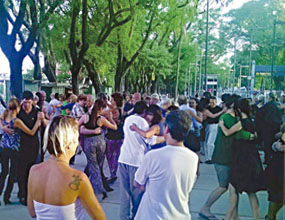

Patio de Comidas
Se inaguró la nueva sede de BA Capital Gastronómica. Ubicado en Pepirí 185, el lugar va a contar con cuatro conteiners con ofertas de parrilla, wok, sushi y menus vegetarianos.
Conocer Mas

Bailá Folklore
Cada domingo se celebra en Parque Patricios. Personas de toda la Capital se reunen para disfrutar, bailar y cantar en la mítica esquina de Caseros y La Rioja.
Conocer MasEdificios ProcreAR
Se terminaron las obras del predio de 54 edificios, con mas de 2300 departamentos. Un lugar para que miles de familia puedan disfrutar de un hogar y financiar a 30 años el inmueble
Conocer MasArchivo General de la Nacion
Se ha inagurado la nueva sede del Archivo General de la Nación. Una edificación que va a utilizarse para el resguardo de documentación histórica invaluable.
Conocer Mas